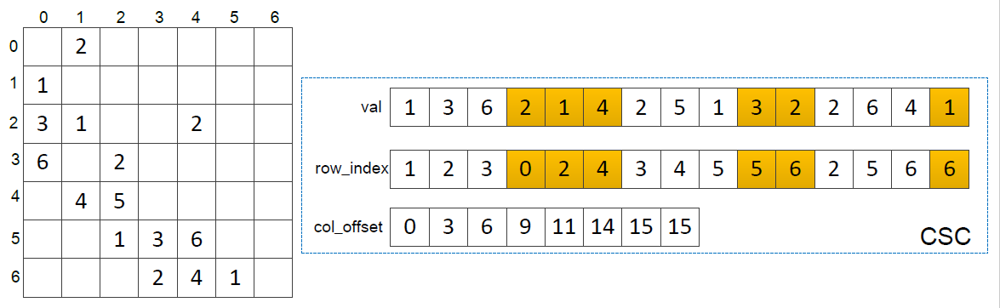
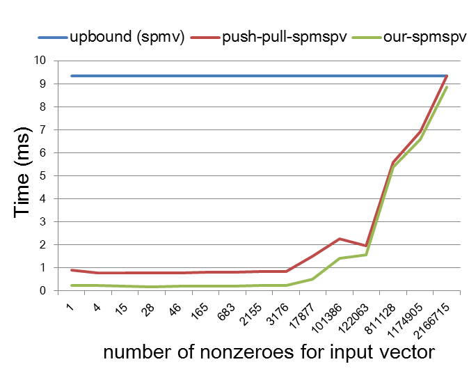
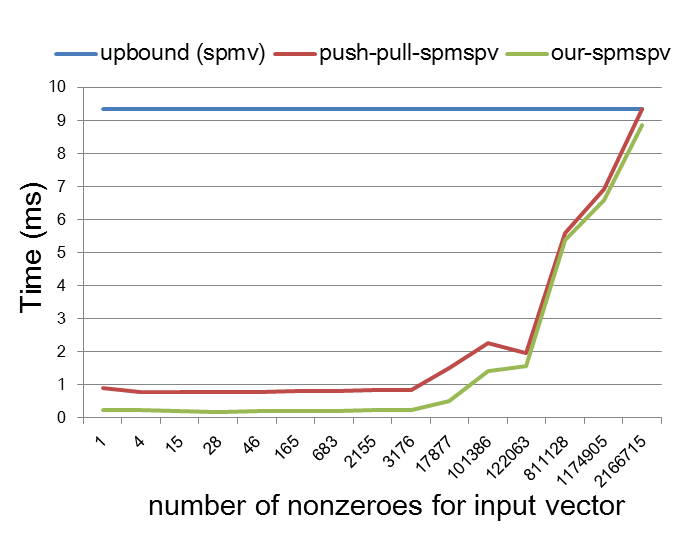

SpMspV (sparse matrix multiply sparse vector)
Algorithm description
, where is a sparse matrix, is a sparse vector and is the resultant dense vector.
Storage
Sparse Matrix
The sparse matrix is stored in Compressed Sparse Column (CSC) format, which is composed of three 1-dimension vectors: val, row_index, col_offset. The val vector (nnz) stores the nonzeroes of the sparse matrix. The row_index (nnz) stores the corresponding row index. The col_offset (n+1) stores the index of the first value for each column in the val vector.

Sparse Vector
The sparse vector is stored with two vectors: x_key, x_val. The len of both vectors are the number of the nonzeroes (x_nnz) for the sparse vector. x_key stores the index of the sparse vector. x_val stores the value of the sparse vector.
Usage
// execute SpMspV on GPU.
SpMspV(m, n, nnz, row_index, col_offset, val, x_nnz, x_key, x_val, y);
Parameter
m：the number of the rows of the input sparse matrix，scalar.n：the number of the columns of the input sparse matrix，scalar.nnz：the number of the nonzeroes of the input sparse matrix，scalar.row_index：the row index of the nonzeroes in the sparse matrix，a -dimension vector.col_offset:the index of the first value for each column of the nonzeroes in the sparse matrix, a -dimension vector.val：the nonzeroes values of the sparse matrix，a -dimension vector.x_nnz：the number of the nonzeroes of the input sparse vector，scalar.x_key:the index of the sparse vector，a -dimension vector.x_val:the value of the sparse vector，a -dimension vector.y：the resultant dense vector，a -dimension vector.
Performance
Performance comparison with the SpMV and the state-of-the-art push-pull SpmSpv.
 

Performance comparison with the number of nonzeroes of the input vector varying on ljournal-2008 dataset.